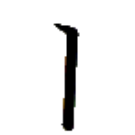
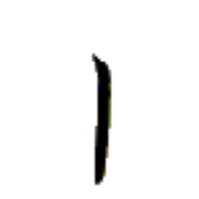
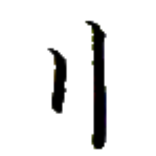
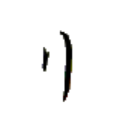
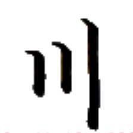
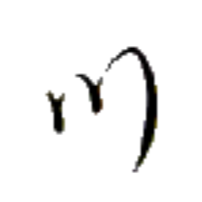
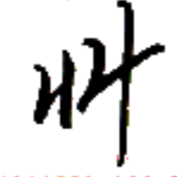
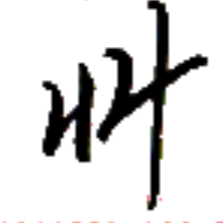

エゥㇳ⤴ 【一】
[連体詞] 1つの
[名詞] 1
[略号] (音楽)基準音と同じ音

イㇰ⤴ 【二】
[連体詞] 2つの
[名詞] 2
[略号] (音楽)基準音の2半音上の音
二之衣 イㇰ⤴ア·タㇰ→ 【二之衣】
[名詞] イークアターク、イーカターク
ラネーメやヴェフィスの伝統的な衣服の一つ。袖がなく、二枚の布を繋いで作られる。素材は綿や麻が多い。
刀水 ガウ⤴ヌア⤴ 【刀水】
[名詞] ガウヌア、カウナ（アイル共和国クワケ郡の大都市）
刀足 ガウ⤴シー→ 【刀足】
[名詞] ギューシュ、ガウシー（橅に似る木の一種）
刀字 ガウ⤴マン→ 【刀字】
[名詞] 碑文書体
手書き以前の書体で、現代では専ら装飾に用いられる。漢字でいうところの篆書体に似る。
リㇷ゚· 【哩】【浬】
[名詞] リパライン、リパラオネ（言語的・民族的区分）

オㇺ⤴ (俗に) オㇺ→ 【三】
[連体詞] 3つの
[名詞] 3
[略号] (音楽)基準音の4半音上の音


 
